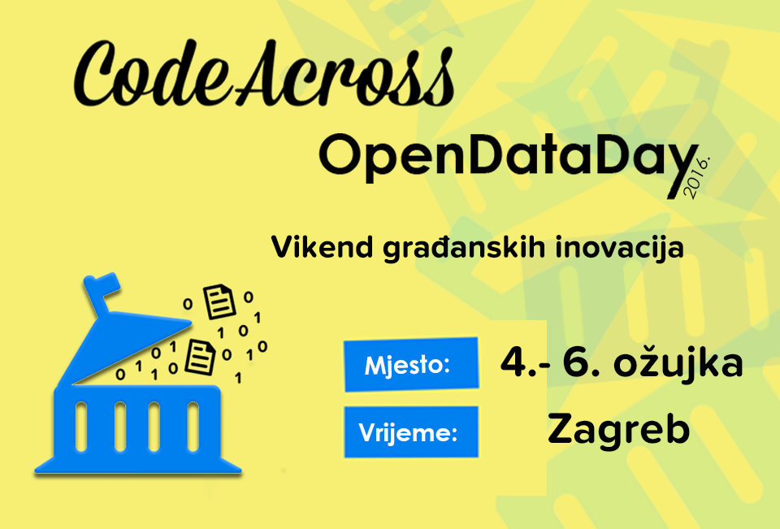

 Rezervirajte datume! Ispričavamo se na prekidu, trenutno radimo stranicu za CodeAcross/OpenDataDay 2016. Ukoliko je hitno, možete nas kontaktirati, ili pričekajte i biti ćemo online uskoro! U međuvremenu pogledajte prošle događaje: Principi vlasti za 21. stoljeće (2015) i Više od transparentnosti (2014). — Tim Programiraj za Hrvatsku
Save the date! Sorry for the inconvenience but we’re working hard to make CodeAcross/OpenDataDay 2016 at the moment. If you need to you can always contact us, otherwise we’ll be back online shortly! In the meantime check past events: Principles for 21st century government (2015) and More than transparency (2014). — Code for Croatia Team